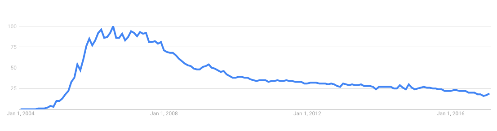
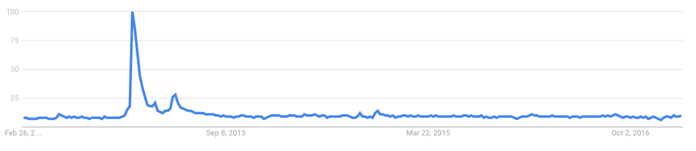
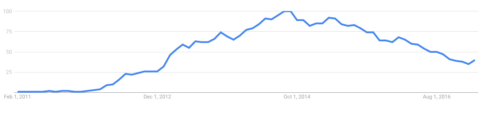
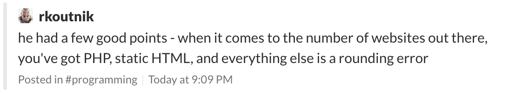
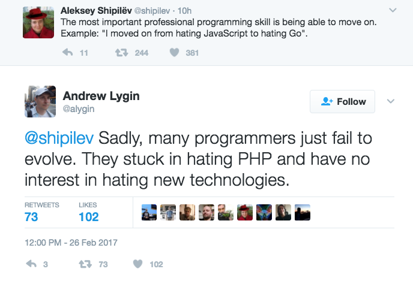

class: theme, center, middle # 10 EASY STEPS TO BECOME A <STRIKE>BADASS</STRIKE> SENIOR ENGINEER Margus Kerma | ZeroTurnaround --- class: center, middle <br /><br /> <img src="lhv.svg" style="height: 40px;"><br /><br /> <br /><br /> --- class: theme # 1: Know the difference --- class: theme ## John: * 9 years on the field * worked for 3 companies * knows all about writing "business software" -- * <span style="color: red">doesn't know how his software works on production</span> -- ## Jane: * 4 years on the field * worked for 3 companies * knows PHP, HTML, CSS, Bootstrap, Node, JS all the frameworks that came out yesterday -- * <span style="color: red">doesn't know what left join is</span> ??? Although the first has experience and the second has pontential and interest, could they be considered senior? ??? * qualifications of a senior developer cannot be measured in years or the amount of frameworks one has rewritten her blog in * it's about knowledge and being able to reflect on your experience --- class: theme # 2: It's not a popularity contest --- <br /><br /> <br /><br /> <br /><br /> --- class: theme ## .. and it is OK to work with "boring" tech <br /><br /> --- class: theme # 3: Understand the full spectrum ``` "A human being should be able to change a diaper, plan an invasion, butcher a hog, conn a ship, design a building, write a sonnet, balance accounts, build a wall, set a bone, comfort the dying, take orders, give orders, cooperate, act alone, solve equations, analyze a new problem, pitch manure, program a computer, cook a tasty meal, fight efficiently, die gallantly. Specialization is for insects." — Robert Heinlein, Time Enough for Love ``` --- class: theme # 4: Learn, evolve, move on <br /><br /> ??? IT moves fast, you need to move fast --- class: theme ## 5: Create, Share, Contribute * GitHub / Bitbucket * Stack Overflow * LinkedIn --- class: theme # 6: Understand network/ing <br /><br /> --- class: theme # 7: Listen --- class: theme # 8: No, you do not want to manage a team <br /><br /> ??? remember john? john is very likly the guy who has seen "career development" in companies that only provide a simple linear path. vertical movement. --- class: theme # 9: Accept that experience comes with time <br /><br /> ??? like having a baby, it's impossible to explain to someone what does it feel like And you get it instantly after you --- class: black background-image: url(smiley.png) ## 10: Be happy ??? None of those things matter if you are unhappy. you need to genuinely love what you do to become a great in --- class: black background-image: url(11.jpg) --- class: black, code background-image: url(vim.jpg) ## $ edit run.sh --- class: theme, center, middle, code # about.me/kerma ---